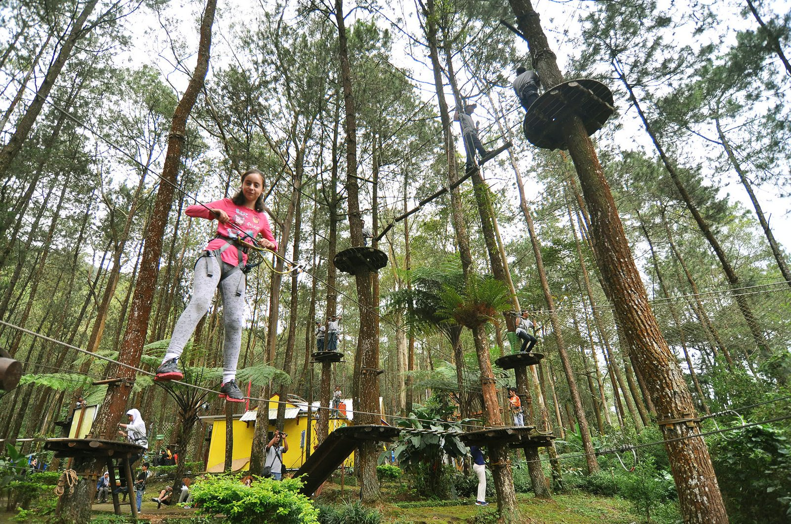

Saloka
Saloka Theme Park adalah sebuah taman bermain yang berlokasi di Jawa Tengah. Taman bermain ini
menawarkan berbagai macam wahana yang seru dan menantang, baik untuk anak-anak maupun dewasa
di sini

Kopeng
Kopeng adalah sebuah desa yang terletak di Kabupaten Semarang, Jawa Tengah. Desa ini terkenal dengan
keindahan alamnya yang sejuk dan asri, serta udara pegunungan yang segar.
.
Info Lebih Lanjut: klik di sini